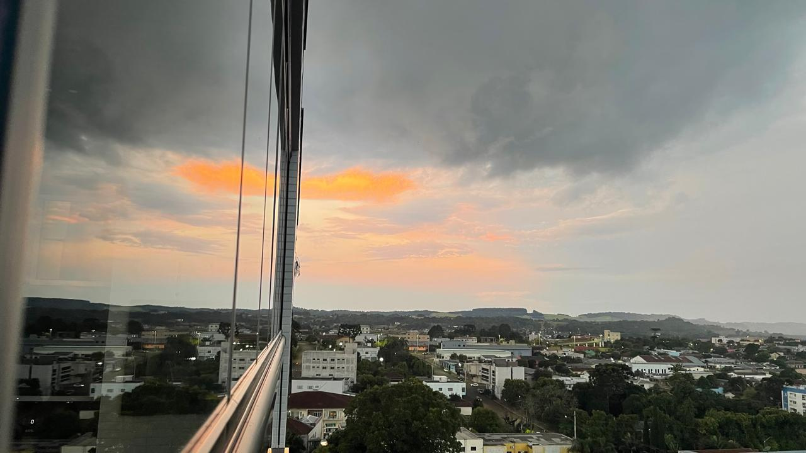

Cidade
A cidade representa inovação, conexão digital e serviços modernos, mas depende do campo para manter sua qualidade de vida com alimentos e sustentabilidade.

Campo
O campo é onde tudo começa: cultivo, cuidado com a natureza e tradições culturais. Cada vez mais, ele se integra com a cidade através da tecnologia e do comércio.